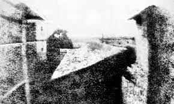
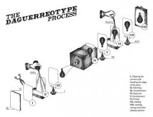
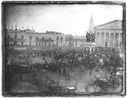
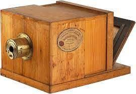
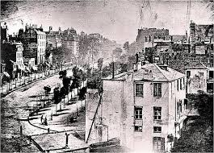

PRIMEROS INTENTOS Y DEGUERROTIPO
    
Las primeras imágenes fotográficas obtenidas en la historia son obra del francés Nicéphore Niepce, científico que logró resultados mediante la prolongada exposición a la luz de placas de peltre cubiertas en betún, dentro de una cámara oscura. La primera imagen obtenida así fue Vista desde una ventana en Le Gras, de 1826, que tomó ocho horas de exposición a plena luz del día.
En 1827 Niepce conoció a Louis Daguerre y firmaron un acuerdo de trabajo que le dejó a este último todo el conocimiento de las técnicas fotográficas de Niepce tras su muerte en 1833. Daguerre añadió al mecanismo una placa de plata pulida, sobre la cual se producían las impresiones, reduciendo así enormemente el tiempo de exposición.
Así nació el daguerrotipo, bautizado en su nombre. Esta nueva técnica permitía hacer retratos, y fue la forma más conocida de fotografía durante mucho tiempo. Sin embargo, al mismo tiempo y sin conocerse otros inventores como Hércules Florence, Hippolythe Bayard y William Fox Talbot estaban estudiando sus propios métodos para obtener impresiones semejantes.